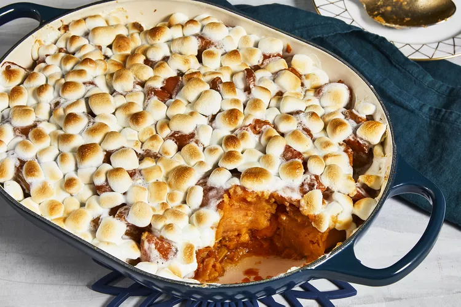

Candied Yams

Description
This candied yams recipe is a simple and quick way to enjoy a Thanksgiving favorite! Canned yams or sweet
potatoes may be used. allrecipes.com
Ingredients
- 1 (29 ounce) can sweet potatoes
- ¼ cup butter, cut into pieces
- ½ cup brown sugar
- 1 ½ cups miniature marshmallows
Directions
- Preheat oven to 400 degrees F (200 degrees C).
- Drain sweet potatoes and place in a medium baking dish. Distribute butter pieces evenly over the sweet
potatoes. Sprinkle with brown sugar. Layer with miniature marshmallows.
- Bake in the preheated oven 25 minutes, or until sweet potatoes are tender and marshmallows have melted.